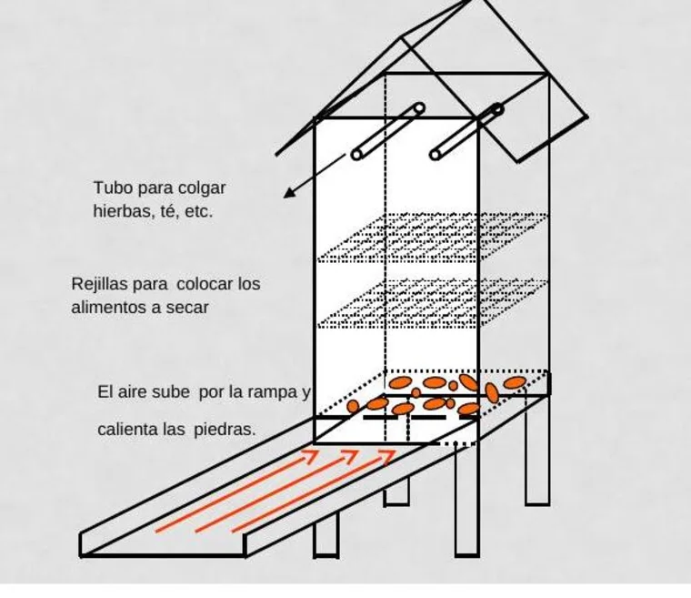

Módulo 12 · 25 minutos
Secar sin perder la esencia
Al terminar, vas a poder elegir un método de secado, controlar sus variables y reconocer cuándo el material perdió calidad por humedad o exceso de desecación.
El último error antes del alambique
Dos lotes de la misma hierba se cortan el mismo día. Uno conserva color, estructura y aroma. El otro se ennegrece, se contamina o se deshace en polvo al tocarlo. La diferencia no estaba en la especie ni en la parcela: apareció después de la cosecha.
Secar es conservar, pero no significa retirar toda el agua sin límite. El objetivo es alcanzar una humedad que frene el deterioro sin convertir la planta en material reseco y quebradizo.
Quitar agua sin destruir el material
El secado mantiene componentes del vegetal fresco y evita la proliferación de microorganismos. Sin embargo, la cantidad de agua retirada no debe superar ciertos valores. Si la muestra se pulveriza al manipularla, el proceso fue demasiado lejos.
Cada especie tiene una humedad máxima de referencia. Romero, tomillo y hojas de laurel: 9 %. Albahaca dulce, eneldo, mejorana, salvia y estragón: 10 %. Orégano: 11 %. Ajedrea: 12 %.
9 %
Romero, tomillo y hojas de laurel.
10 %
Albahaca dulce, eneldo, mejorana, salvia y estragón.
11 %
Orégano.
12 %
Ajedrea.
La especie no es la única variable. Hierbas y hojas suelen secarse a temperatura moderada; raíces, cortezas y rizomas admiten temperaturas algo mayores. También importa el aspecto final que debe conservar el producto.
Sol, sombra y protección nocturna
Algunos materiales, como ciertas raíces, pueden secarse al sol. Otros deben permanecer a la sombra para conservar su color: las hojas de angélica se volverían amarillas y las flores de acacia se ennegrecerían si se expusieran directamente.
En cualquier caso, el material debe protegerse del rocío y de la lluvia. El método elegido no puede permitir contaminación ni una disminución de su calidad.
Secado natural: simple, pero dependiente del clima
Con baja humedad relativa y temperaturas elevadas, el secado natural es sencillo y requiere poco gasto. El método incorrecto consiste en extender las hierbas directamente sobre el suelo al sol: el resultado es un producto contaminado, de mala calidad y bajo valor comercial.
La alternativa es trabajar en capas delgadas sobre catres, remover con frecuencia y cubrir o guardar bajo techo durante la noche. Los catres deben poder ser manipulados por una persona.
En pequeña escala, las hierbas también se cuelgan en manojos con los tallos hacia abajo. Una hierba formada por hojas y tallos leñosos delgados puede demorar tres o cuatro días en condiciones apropiadas.
El límite del secado natural es el clima: una cosecha puede coincidir con alta humedad, lluvia o baja temperatura, sin posibilidad de controlar esas variables.
Un secador que mueve aire caliente

Seguí el aire
Empezá en la rampa inferior y seguí las flechas. El aire gana calor, atraviesa una capa de piedras y sube hacia las bandejas. ¿Qué función cumplen las piedras cuando disminuye la insolación? ¿Dónde colocarías las hierbas para que el aire pueda circular a su alrededor?
El secador solar posee un captador protegido por vidrio. El aire calentado asciende por el cuerpo, atraviesa piedras que retienen calor y permite continuar el proceso cuando hay poca insolación. El material se coloca en bandejas o se cuelga dentro del equipo hasta alcanzar el grado necesario.
Secado mecánico: pagar por el control
El secado mecánico exige más gasto, pero permite controlar las variables y obtener en pocas horas un producto homogéneo. Puede realizarse mediante aire caliente, contacto con una superficie caliente, microondas o energía dieléctrica, y . El sistema más utilizado es la corriente de aire caliente.
El aire cumple dos tareas: aporta calor para evaporar la humedad y transporta el vapor que se forma cerca de la superficie.
Las tres fases del proceso
En la , la superficie se ajusta a las condiciones del aire. Esta etapa ocupa una parte pequeña del tiempo total.
Durante el período de velocidad constante, la superficie permanece saturada porque el agua interior llega a ella a la misma velocidad con que se evapora.
En el período de , la superficie se seca, el agua interna encuentra más resistencia y la temperatura del sólido se acerca a la del aire. Esta fase representa la mayor parte del tiempo.
La consecuencia es decisiva: la temperatura del aire debe moderarse para evitar que la hierba supere su , generalmente entre 35 y 45 °C. Cada secadora tiene un comportamiento propio y debe conocerse y calibrarse.
Actividad · Diagnosticar tres lotes
- Hierbas extendidas directamente sobre el suelo y dejadas al rocío durante la noche.
- Hojas secadas con calor hasta quebrarse y convertirse en polvo.
- Manojos protegidos bajo techo, con circulación de aire, que alcanzan su humedad objetivo.
Para cada lote describí el resultado probable, el error o acierto y la corrección. Después elegí una especie de la tabla y anotá su humedad máxima.
La cosecha se vuelve materia prima
La Parte 3 comenzó en el suelo y termina con un lote identificado, protegido y seco hasta su humedad objetivo. El cultivo ya puede entrar en una nueva etapa. En la próxima parte, el problema no será hacer crecer la planta, sino separar de ella la fracción aromática.
Guardá esta estación
Cuando puedas explicar la idea central con tus propias palabras, marcá el módulo como completado.